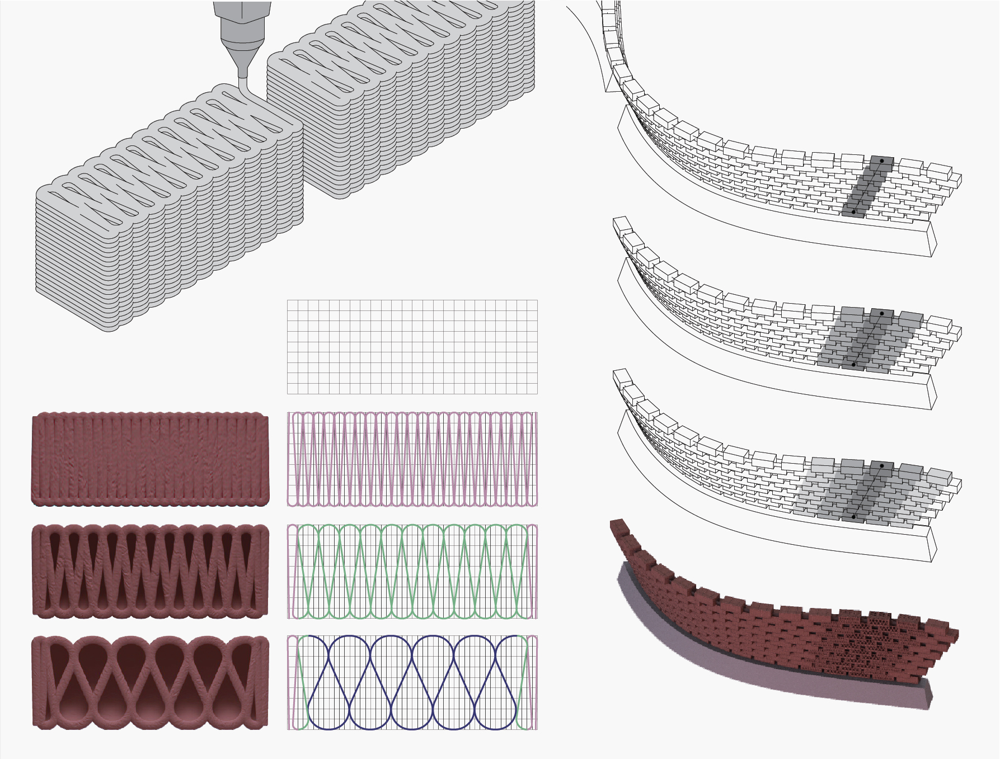
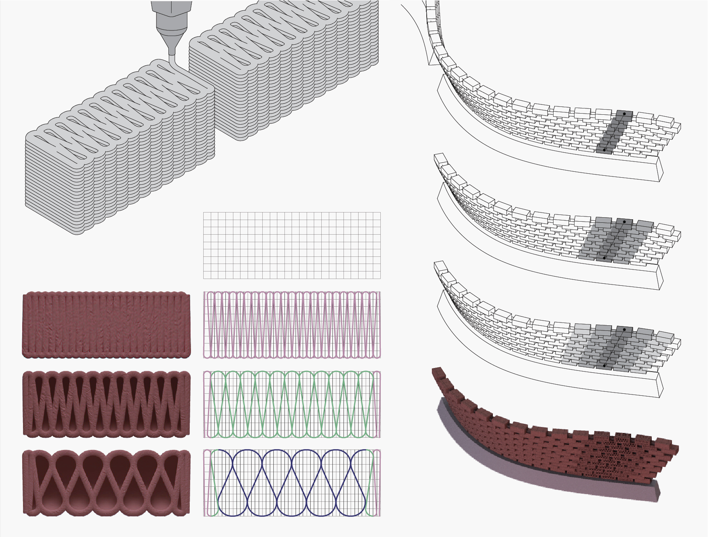
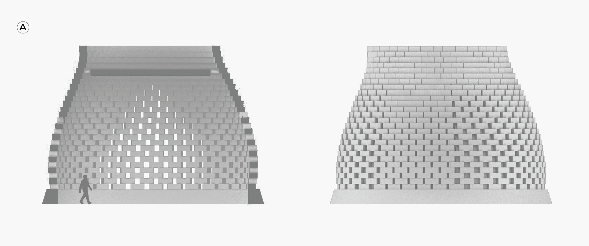
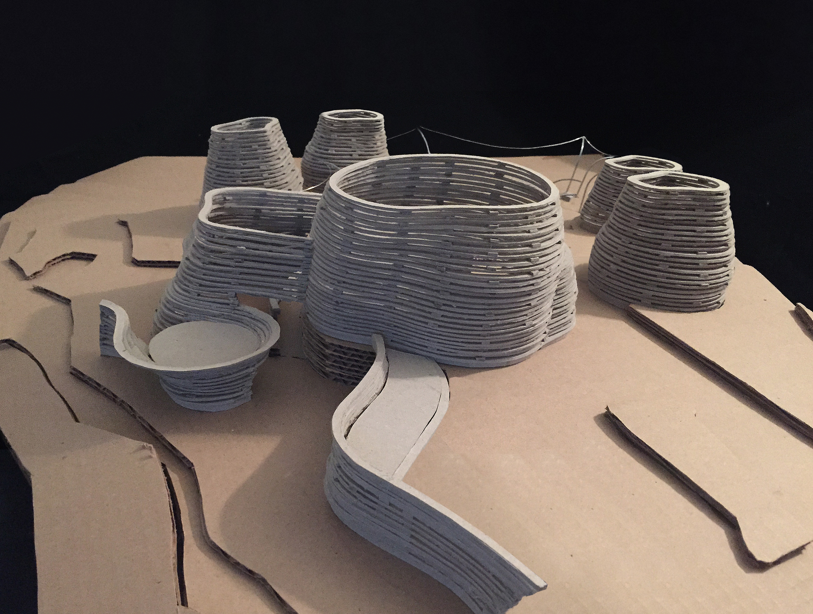
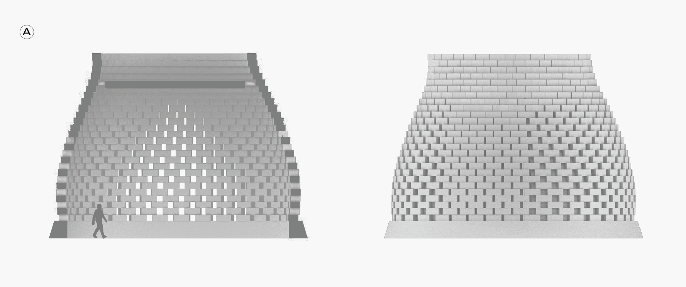
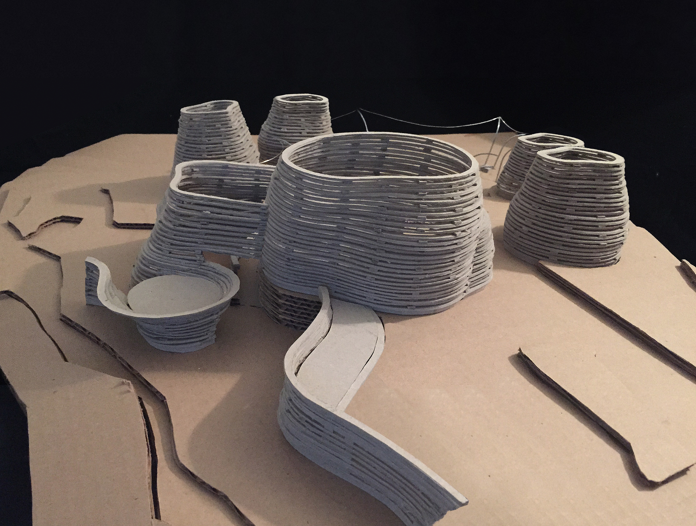

The ROCa primary school is located inside the San Juan Botanical Garden, more specifically at a former water purifier by sediment. Inspired by the nearby river, its form takes shape of erosed stones by the water. Contours were obstruded from the terrain’s natural curves.
Its skin is made up of 3D printed bricks, some of them see through. The school holds a nursery garden on its center. ROCa’s program consists on an education that revolves around nature, teaching children to nurture and enjoy their natural environment.

 


 


